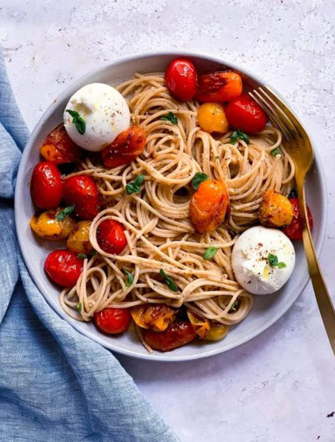

Pasta

Description
What is the dish?
Here's a meal that's simple, stunning, and highlights the very best summer ingredients:
Cherry Tomato Pasta! Just looking at these photos makes us swoon.
(And yes: it tastes as good as it looks.) This easy dinner idea stars blistered
tomatoes, a technique of cooking tomatoes in a hot pan until the skin blisters and
blackens. Mix the tomatoes with tangy balsamic vinegar, then add al dente pasta and
peppery fresh basil. You'll be amazed at the amount of flavor these classic summer
ingredients infuse in 20 minutes. Use it to impress guests, or as a fast
and easy dinner that's over-the-top tasty.
Ingredients:
- 16 ounce short pasta (penne, rigatoni, orecchiette (shown here),
shells, cavatappi, etc)
- 6 tablespoon olive oil, divided
- 4 pint whole cherry tomatoes
- 2 tablespoon balsamic vinegar
- Kosher salt
- Fresh ground black pepper
- 4 garlic cloves
- 1 cup grated Parmesan cheese, divided
- ½ cup pasta water
- 2 handful fresh small basil leaves, chopped if large
Steps:
- Make the pasta: Start a pot of well salted water to a boil. Boil the pasta
until it is just al dente. Start tasting a few minutes before the package
recommends: you want it to be tender but still a little firm on the inside;
usually around 7 to 8 minutes. Before draining, reserve some pasta water
with a liquid measuring cup (at least ¼ cup). Drain the pasta.
- Blister the tomatoes: Heat 2 tablespoons olive oil in a very large heavy
skillet over medium high heat. Once hot, add the tomatoes, making sure
there is space around each tomato (they are not touching) and the pan is not
crowded. If you're using a medium pan, cook the tomatoes in 2 batches.*
Cook for 1 minute without touching the pan, then 2 to 3 more minutes until
blistered, shaking the pan several times to rotate the tomatoes.
Turn off the heat and drizzle with the balsamic vinegar, gently shaking
several times to coat. Add 2 pinches kosher salt and fresh ground black pepper
to taste. Remove the tomatoes from the pan to a bowl.
- Finish the dish: Mince the garlic. Once the pasta is done, in the same pan,
heat the remaining 1 tablespoon olive oil over medium low heat.
Add the garlic and cook 1 minute until fragrant. Deglaze the pan with ¼ cup
pasta water, scraping the pan with a spoon to release all of the flavor of the
tomato juices. Turn off the heat.
- Add the pasta to the pan and toss to coat. Add the blistered tomatoes,
¼ cup grated Parmesan cheese, and basil. Season with 2 pinches of kosher
salt and lots of fresh ground pepper. Taste and add more salt if necessary.
Serve with the remaining ¼ cup grated Parmesan cheese sprinkled on top.
Enjoy your delicious homemade pasta!